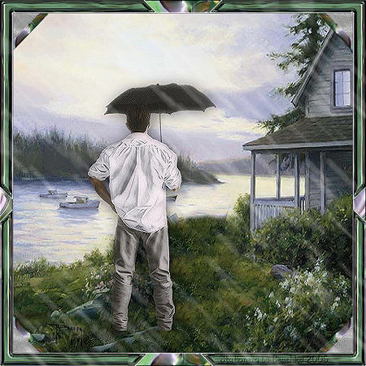

e kartlar

CİNNET
Son günlerde kendisini çok bitkin hissediyordu. Üniversite sınavının gittikçe yaklaşması onun kaygılarını arttırdıkça, asabiyeti ve hırçınlığı da artmış, geceleri uykusunun sık sık bölünmesine hatta kâbuslar görmesine neden olmaya başlamıştı. Rüyalarında sürekli sınavı kazanamadığını görüyor, kan ter içinde sıçrayarak uyanıyordu. O gece uykusuzluğu artık had safhaya ulaştığı için erkenden yatmış, hiçbir şey düşünmemeye çalışarak uyuyup kalmıştı. Gece yarısı derin uykusundan sanki omzundan birisi dürtmüş gibi bir hisle uyanmıştı. Gözlerini açıp bir an karanlığı seyretti, odanın karanlığında görecek bir şey bulamayınca gözlerini kapatıp, gecenin sessizliğini dinlemeye koyuldu. Az sonra duyduğu sesler gecenin sessizliğini bozmuştu. Seslerin ne olduğunu anlamaya çalışıyordu. İşittiği sesler gittikçe netleşmeye başlamıştı. Duyduğu konuşmalar iki kişiye ait olduğu ayırt edilebilecek kadar netleşmişti. Bir kadın ve bir erkeğe ait olduğunu anladığı konuşmalar gittikçe şiddetlenmeye başlamıştı. Sonunda bu konuşmalardan bir kadın ve bir erkeğin kavga ettikleri anlaşılıyordu. Yattığı yerden doğrularak yatağın içinde oturdu ve konuşmaları dinlemeye başladı. Erkeğin gittikçe sinirlendiğini, kadının da gittikçe savunma durumuna geçtiğini kullandıkları cümlelerden anlıyordu. Erkeğin karısı olduğu anlaşılan kadını kıskandığı ve ona güven duymadığı, hatta onu kendisine ihanet etmekle suçladığı anlaşılıyordu. Kadınsa erkeğin yanıldığını, bütün bu düşüncelere nereden kapıldığını soruyordu. Sonunda adam karısını öldürmekle tehdit etmeye başlamıştı. Sesler öylesine berraklaşmıştı ki, kadının hıçkırıkları bile duyulmaya başlamıştı. Tam o sırada kavgayı küçük bir kız çocuğunun ağlaması kesmişti. Küçük kız anne diye ağlıyordu. Kadının hemen onun yanına gittiğini ayak seslerinden anlamıştı. Çocuğa sarılan kadın onu, bütün sevecenliğiyle yanında olduğuna ve korkmaması için ikna etmeye çalışıyordu. Sonunda küçük kızın ağlaması kesilmişti. Yatağında hala oturmuş duyduğu sesleri can kulağıyla dinliyordu. Birden adamın karısına yumuşak bir sesle “hadi yatalım hayatım, çok geç oldu” dediğini, kadının da “evet sevgilim, yarın akşam devam ederiz” diye cevap verdiğini duydu. Neye uğradığını şaşırmıştı. Az sonra da elektrik düğmesinin çıkardığı sesi duymuş ve yattıklarını anlamıştı. Şoka girmiş gibi yerinde öylece bir süre kalakalmıştı, ne düşüneceğini bilemiyordu. O büyük kavgadan sonra, böyle hiçbir şey olmamış gibi canım gülüm yatıvermişlerdi. Az önce kadını öldürmekle tehdit eden sanki o adam değildi de bir başkasıydı. Geç oldu hayatım yatalım demişti, ölümle tehdit edilen kadın da, evet sevgilim yarın akşam devam ederiz diye yanıt vermiş ve yataklarına girip belki de sarmaş dolaş yatıvermişlerdi. “Yok, artık” deyip yataktan fırlayıp kalktı, salona gitti ve ışığı açıp camın önünde duran koltuğa oturdu. Perdeyi açtı dışarıyı seyretmeye başladı. Bir yandan bütün bunların anlamı ne diye düşünüyordu. Şahit olduğu konuşmalar bilmece gibiydi. Adamın hiç şaka yapar gibi bir hali yoktu, çok ciddiydi, sesindeki hiddetten kadına bir zarar vereceği apaçık belli oluyordu, kadının sesinden de son derece korkmuş olduğu, büyük bir acizlik içinde yalvardığı hatta hıçkırıklarla ağladığını çok net duymuştu. Nasıl olup da bir iki dakika içinde böyle yüz seksen derece dönüp canım gülüm oluvermişler ve yatıp uyumuşlardı. Arkasında duyduğu tıkırtı ile irkilip salonun kapısından annesinin girdiğini duyunca rahatlamıştı. Onun kalktığını duyan annesi merak edip kalkmış salona gelmişti. Her şeyi en ince ayrıntısına kadar annesine anlattı. Duyduğu sesler üst kata altı ay önce taşınan komşularından geliyordu. Evli karı koca olan genç bir çifttiler, üç yaşında bir kızları vardı, kimseyle iletişim kurmuyorlardı. İkisi de çalışıyorlardı, büyük bir ihtimalle çocuklarını da kreşe bırakıyorlardı. Her sabah birlikte çıkıyorlar, akşam birlikte dönüyorlardı. Karşılaştıkları komşulara günaydın, iyi akşamlar, merhabadan başka bir şey söylemiyorlardı. Tüm iletişimleri bu kadardı. O gece Okan için her şeyin başladığı ilk geceydi. O geceden sonra bu kavgaları her gece duymaya başlamıştı. Kavganın seyri hep aynı idi, sebep aynı, adamın suçlamaları aynı, kadının savunmaları aynı, aynı bağırmalar, aynı savunmalar ve hep aynı son “hadi hayatım geç oldu yatalım, olur sevgilim yarın devam ederiz”. Değişen tek şey küçük kızın durumu idi. O bazen ağlayarak uyanıyor bu ortama katılıyor, bazen uyanmıyordu bile. Ancak Okan’ın duydukları bu kadarla kalmamıştı. Her geçen gün duyduğu seslere yenileri ekleniyordu. Yeni seslerse yukarı kattan değil, diğer katlardan gelmeye başlamıştı. Oturdukları kat apartmanın üçüncü katıydı. Apartmanları yedi katlıydı ve her katta iki daire vardı. Eski bir apartmandı ve apartmanda oturanların çoğu ev sahibi idiler. Kiracı olan komşuları sadece çatı katındaki Gül hanımlar, beşinci katta oturan emekli Kemal beyler ve üçüncü katta oturan şu her gece kavga eden isimleri Güray ve Nergis olanlardı. Her gece duyduğu konuşmaları ertesi gün annesine anlatıyor ve birlikte durum değerlendirmesi yapıyorlardı. Apartmanda her evde ne konuşuluyorsa hepsini duymaya başlamıştı. Akşam olup da yatağına çekildiğinde tüm komşuların konuşmalarını duymaya başlıyor, kimin evinde ne oluyor ne bitiyor öğreniyordu. Bu durumdan son derece rahatsız olmuştu. Uyku uyuyamıyor, korkuyor, ne yapacağını bilemiyordu. Sonunda durumu babasına da anlatmışlar, o da şaşırmıştı duyduğu şey karşısında. Ama onu en çok üst kattaki komşuları ilgilendiriyordu. Adının Nergis olduğunu öğrendiği genç kadını ve küçük kızını bir gün markette görmüştü. Marketten birlikte çıkmışlar, onlar da oturduğu apartmana doğru gelmişler, hatta apartmana girerken içeri girmeleri için kapıyı tutmuştu. Sonrada o eve girerken genç kadın iyi günler dileyip küçük kızla üst kata çıkmıştı. Nergis çok güzel bir kadındı. İncecik vücudu, iri gözleri, bembeyaz teniyle insanı büyüleyen bir hali vardı. Küçük kız da annesinin kopyasıydı adeta. Daha sonraki günlerde de pencereden onların birlikte gidiş gelişlerini izler olmuştu. Kocası dış görünüşte giyimiyle, görüntüsüyle iyi bir adama benziyordu. Hiç öyle karısına eziyet edecek, tehditler savuracak, yada karısını öldürebilecek bir görüntüsü yoktu görünüşte. Duyduğu kavgalar her geçen gün daha kötüye gidiyordu. Adamın tehditlerine her geçen gün yenileri ekleniyordu. Kadın da kendisini nasıl savunacağını bilemiyor, ağlama krizlerine tutuluyordu. Okan tam şimdi öldürecek kadını diye düşündüğü an, ya kızları ağlayarak uyanıyor, ya da aniden kavga sona eriyor ve aynı sözleri söyleyip bir şey olmamış gibi yatıveriyorlardı. Okan’ın ruh sağlığı gittikçe bozulmuştu. Uykusuzluk ve yaklaşan sınavın heyecanı, stresi yüzünden depresyona girmişti. Nergis’e karşı acıma duygusu başlamıştı içinde. Kendisini engelleyemiyor çok üzülüyordu. Onların ne yaptıklarını duymak için erkenden odasına çekiliyor, yukarıyı dinlemeye başlıyordu. O gece yatağına girdiğinde küçük kızın ağladığını duymaya başlamıştı yine. Küçük kız baba acıyor, çok acıyor yapma yapma diye yalvarıyordu. Nergis de yapma, saçmalama diye adama engel olmaya çalışıyordu. Küçük kız var gücüyle bağırdığı an yataktan deli gibi kalkmış, ne yapacağını şaşırmıştı. Bütün gücüyle ağlıyordu yavrucak, Nergis’in ise hiç sesi çıkmıyordu artık. Yukarıdan mutfaktan sesler geliyordu, küçük kız ağlamayı kesmişti. Okan’ın nefesi kesilmiş dinliyor, dinliyor ama bir şey duymuyordu. Adamın Nergis’e ve kızına bir şey yaptığını anlamıştı. İkisini de öldürmüştü, evet ikisini de öldürmüştü. Bir anda çılgına döndü. Ne düşündüğünü ne yaptığını bilmiyordu artık. Yukarıdaki koridordan gelen sesle kendine geldi. Adam “işte bu kadar basit sonunda halloldu” demişti. Okan deli gibi mutfağa koşturdu, tezgahın üstünde duran bıçağı kaptı, annesiyle babası televizyonda dizi seyrediyorlardı, onun mutfağa girdiğini fark etmemişlerdi bile. Sokak kapısına geldiğinde merdivenden gelen ayak seslerini duyup, kapının deliğinden dışarıya baktığında adamın aşağı indiğini görmüştü. Tam kapının önünden geçerken kazağının önündeki kan lekelerini görmüş dili tutulmuştu. Onları öldürdüğüne artık emindi. Adam alt katlardaki merdivenlerden iniyordu. Kapıyı yavaşça açtı, yalınayak olarak arkasından merdivenlerden inmeye başladı. En alt kata geldiklerinde Güray’ın Sokak kapısına değil de, bodrum katına doğru gittiğini görüp durakladı. Bir an düşündü, bodrumda ne yapacak acaba diye merak etmişti. Sonunda bodrumda kömürlükler bulunuyordu. Demek onları kömürlükte saklayacak diye düşündü. Fakat aklına gelen düşünce ile beyninden vurulmuşa döndü, belki de onları parçalayıp sobada yakacaktı. Evet, onları sobada yakacak ve kurtulacaktı. Çılgına dönmüştü, kendini toplayıp sessizce arkasından kömürlüğe girdi. Karşı tarafta kendi dairesine ayrılmış kömürlüğün önünde duran Güray kömürlüğün kapısını açıyordu. Asma kilidi açarak kömürlerin üzerindeki küreği alan Güray, orada duran plastik kovanın içine kömür doldurmaya başlamıştı. Üzerindeki beyaz kazağının kolu üzerindeki kan lekesi çok bariz bir şekilde belli oluyordu. Bu görüntü ile birlikte Nergis’in ve küçük kızının görüntüsü Okan’ın hayalinde birbirine karışınca Güray’ın kurtuluş şansı kalmamıştı. Arkasından sessizce yaklaşan Okan elindeki bıçağı bütün gücüyle Güray’ın sırtına saplamış ve var gücüyle çıkarıp tekrar tekrar saplamıştı. Onun cansız bedeni kan içinde yere yığıldığı zaman, duyduğu bütün sesler yok olup gitmişti. Kocasının bir türlü gelmediğini gören Nergis ona bakmaya gittiğinde, kömürlükte kanlar içinde yatan kocasını ve elindeki bıçakla üstü başı kan içinde yanına oturmuş Okan’ı görünce, attığı çığlıkları duyan komşular kömürlüğe geldiklerinde gördükleri manzara karşısında şok olmuşlardı. Tutuklanarak ceza evine giren Okan onu savunan avukatından gerçeği öğrendiğinde yıkılmıştı. Güray ve Nergis özel bir tiyatroda çalışan iki oyuncu idiler ve evde çalıştıkları tiyatronun sahneye koyacağı son oyunun provasını yapıyorlardı her gece. Oyunun konusu kıskançlıktan dolayı işlenen bir cinayetti. Okan’ın duyduğu kavgalar da oyunda oynayan Güray ve Nergis’in replikleriydi. Küçük kızın ağlama nedeni ise, kreşte iki gün önce merdivenden düşmüş dizi yarılmış ve hastanede dikiş atılmıştı. O gece Güray kızının dizine pansuman yapmak için bantları çıkarırken dikişlere yapışan bantlar çocuğun canını çok acıtmış hatta kanamasına neden olmuştu. Kızının dizinden akan kan Güray’ın kazağının önüne ve koluna bulaşmıştı. Bir ay sonra ilk duruşmaya çıkan Okan ne savcının ne avukatının sorduğu hiçbir soruya cevap vermiyordu, onları hiç duymuyor gibiydi. Onun aklı hemen yan salonda başlayan miras davası ile ilgili duruşmada konuşulanlardaydı. Samile İLTER. 05.01.2007 |
ileri...